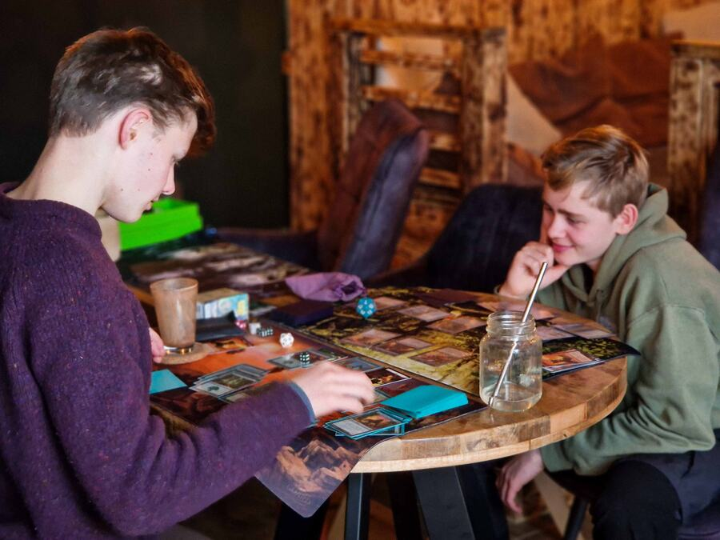
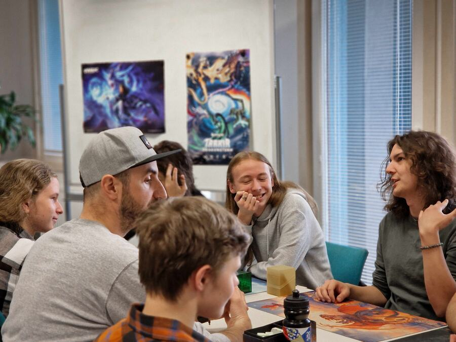
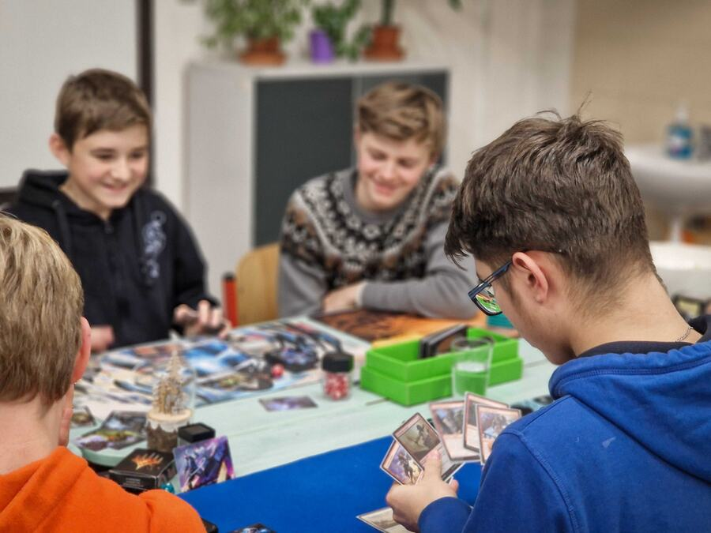
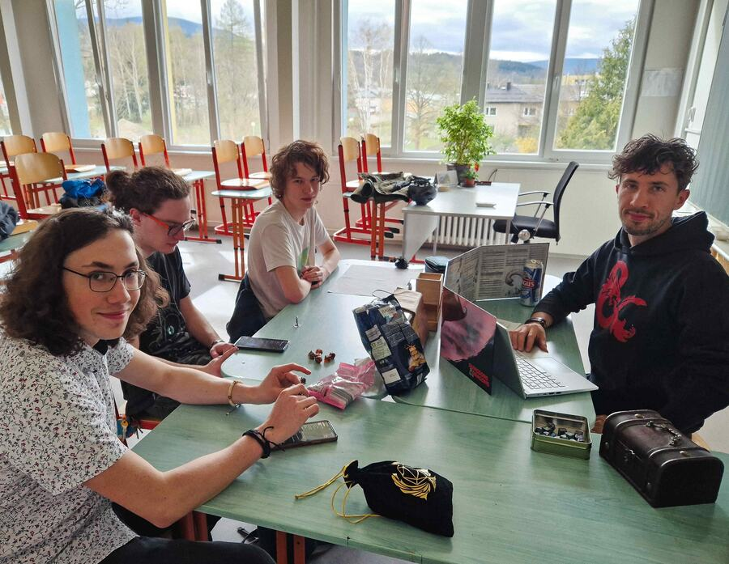
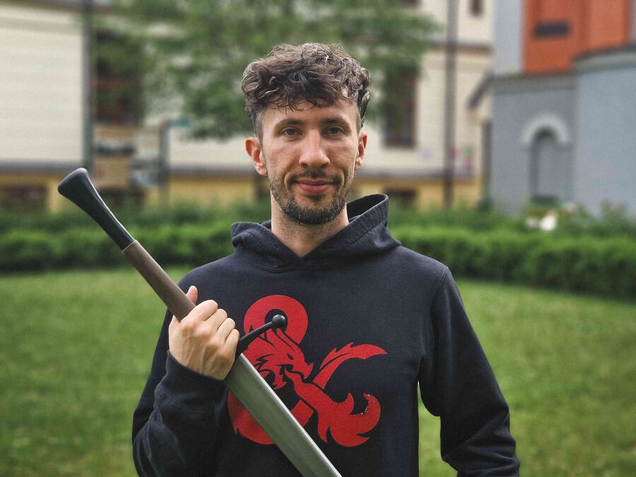

Fantasy IRL
MTG a D&D klub Jeseník
Vystup z běžné reality a vydej se s námi za hranice představivosti.
Není to únik. Je to návrat.
Poprvé? V pohodě – uvedeme tě.
Kdy a kde hrajeme
Domlouváme se na Discord.
Sejdeme se IRL.
Budujeme bezpečný a otevřený prostor, kde je vítaný každý bez rozdílu — můžeš jít vlastním tempem a být sám/sama sebou.
Přidej se přes formulář níže 👇




Co u nás hrajeme
- Magic: The Gathering — náš největší tahák jsou čtvrtletní Booster Drafty, běžně se sejde 12 lidí. Jinak hrajeme Modern, Pauper, Pioneer a Commander.
- Dungeons & Dragons — nejvíc prostoru pro kreativitu. Kampaně i one-shoty podle pravidel 5.5e (2024).
- Warhammer 40k Kill Team — jako šachy, ale lepší. Skirmish bitvy s miniaturami a malování figurek.
- Šerm a LARP — D&D naživo. HEMA, dlouhý meč, trénink do akce.
Neznáš žádnou z nich? Nevadí — karty, kostky i vybavení půjčíme a pravidla vysvětlíme.
👉 Připoj se k naší Fantasy komunitě
Díky! Co nejdříve ti pošleme pozvánku na Discord. Kdyby nic nepřišlo do 2 dnů, napiš nám na Instagram nebo na jakub.kovarik.c@gmail.com. 🎲
Odeslání se nepovedlo — asi vypadlo připojení. Zkus to prosím znovu, nebo nám napiš na Instagram nebo na jakub.kovarik.c@gmail.com.
Nejsi si něčím jistý/á? Mrkni na Časté otázky.
Jak vznikl MTG a D&D
fantasy klub v Jeseníku?
aneb Mág, Mistr a Alchymista vejdou do baru, …
Jsme parta lidí, co miluje fantasy, dobrodružství a společnou zábavu. Klub vznikl v roce 2021, když nás osud svedl dohromady v Čajbaru Pangea, který je od té doby srdcem našeho komunitního centra ❤️.
Přijď si s námi zahrát Magic: The Gathering nebo Dungeons & Dragons naživo a užít si fajn komunitu.
Příběhy nás spojují. Od starověkých jeskynních maleb až po moderní filmové blockbustery, zůstávají základem lidské zábavy a spojení. Stejně jako jsme kdysi sdíleli příběhy u ohně, dnes se scházíme u obrazovek, abychom zažili sílu příběhů. Spojují kultury, podněcují představivost a připomínají nám naši společnou lidskost.
Yes& jako vize
Naší vizí je budovat na Jesenicku rozmanitou fantasy komunitu, kde se lidé potkávají, navazují přátelství a každý se může zapojit do společného dění 🙂.
Název Yes& vychází z principu „yes, and“, známého z improvizačního divadla, který je blízký i Dungeons & Dragons. Znamená otevřenost, spolupráci a schopnost rozvíjet to, co přichází – společně tvořit příběhy a hledat nové cesty.
Podobný princip najdeš i ve hře Magic: The Gathering, kde se mění strategie, situace i protihráči a každá hra je jiná.
„Yes“ zároveň odkazuje na náš domovský Jeseník, jehož příroda je pro nás velkou inspirací.
Ať tě síla provází a tvůj život je jedno velké dobrodružství!

Jakub „Fangor z Jeseníku“ Kovařík, koordinátor fantasy komunity Yes&
Partneři
Magic the Gathering, MTG, Dungeons & Dragons, D&D, their respective logos, planeswalker symbol and the dragon ampersand, 5 mana and tap symbol, are registered trademarks of Wizards of the Coast LLC.